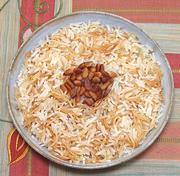

|
Rice & Vermicelli PilafArmenia - Prinzov Pilaf | Turkey - Sehriyeli Pilav | Lebanon - Riz Bish-sh'iriyyi | ||||
| Serves: Effort: Sched: DoAhead: |
4 side ** 30 min Yes |
This basic rice and vermicelli pilaf is an essential in Armenia and Turkey. The Armenian Diaspora has carried it all through the Levant and far beyond. | |||
|
|
1 1/2 3 2 1/3 |
c c T c t |
Rice, long grain (1) Vermicelli (2) Butter Broth (3) Salt |
This pilaf is amazingly light and fluffy, delicious and easy to make - often embellished with sliced and toasted almonds or pine nuts.In California, it inspired an Italian pasta maker to create Rice-A-Roni. Make: - (30 min - 10 min work)
|